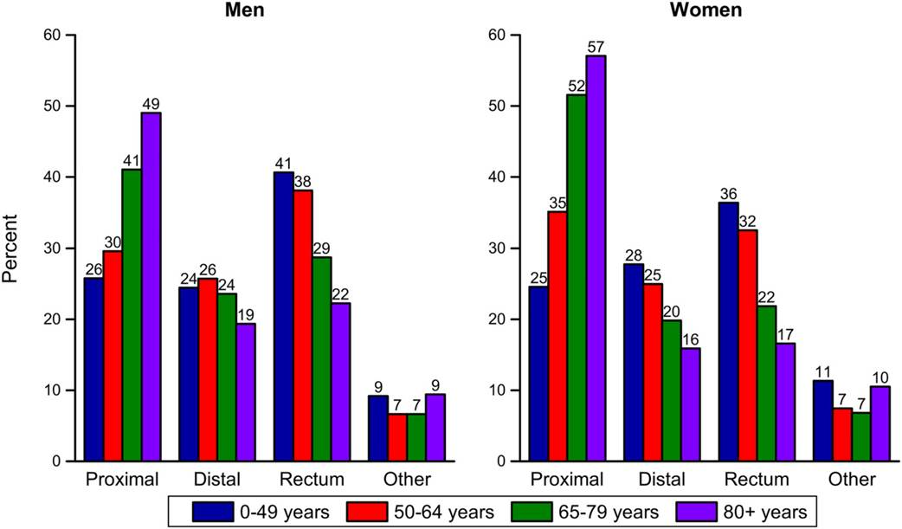

Colorectal Cancer Incidence (2009–2013) and Mortality (2010–2014) Rates by Race/Ethnicity and Sex, United States. AI/AN indicates American Indian/Alaska Native; API, Asian American/Pacific Islander; NHB, non‐Hispanic black; NHW, non‐Hispanic white. Rates are age adjusted to the 2000 US standard population. *Rates for AI/ANs are based on Contract Health Service Delivery Area (CHSDA) counties; incidence rates exclude data from Kansas. Sources: Incidence: NAACCR, 2016. Alaska Natives only: SEER program, 2016. Mortality: NCHS, CDC, 2016.
 In the United States, the annual age‐standardized incidence rate for CRC during 2009 through 2013, the most recent years for which data are available, was 40.7 per 100,000 persons, and the mortality rate (2010‐2014) was 14.8 per 100,000 persons. Incidence and mortality rates are 30% and 40% higher in men than in women, respectively,20 although the lifetime risk of disease is similar (4.6% vs 4.2%) because women have longer life expectancy. In addition, the sex disparity differs by age. For example, incidence is not significantly different in men and women younger than age 40 years but is almost 50% higher in men than in women ages 55 to 74 years (131.5 vs 90.7 per 100,000). Reasons for higher rates in men are not completely understood but to some extent likely reflect differences in exposures to risk factors and sex hormones, as well as complex interactions between these influences.
In the United States, the annual age‐standardized incidence rate for CRC during 2009 through 2013, the most recent years for which data are available, was 40.7 per 100,000 persons, and the mortality rate (2010‐2014) was 14.8 per 100,000 persons. Incidence and mortality rates are 30% and 40% higher in men than in women, respectively,20 although the lifetime risk of disease is similar (4.6% vs 4.2%) because women have longer life expectancy. In addition, the sex disparity differs by age. For example, incidence is not significantly different in men and women younger than age 40 years but is almost 50% higher in men than in women ages 55 to 74 years (131.5 vs 90.7 per 100,000). Reasons for higher rates in men are not completely understood but to some extent likely reflect differences in exposures to risk factors and sex hormones, as well as complex interactions between these influences.
CRC survival rates are presented for men and women combined because they do not vary substantially by sex. The 5‐year relative survival rate for patients diagnosed from 2006 to 2012 (all followed through 2013) was 65%.7 Survival declines to 58% at 10 years after diagnosis, although this estimate does not reflect the most recent improvements in detection and treatment because it is based on the experience of patients diagnosed as far back as 2000. Overall five‐year survival is slightly higher for patients with rectal tumors (67%) than for those with colon tumors (64%), despite generally higher stage‐specific survival for colon tumors, because rectal cancer is more often diagnosed at a localized stage (43% vs 38%) (Table 4).7 Survival also varies based on tumor location within the colon; 5‐year survival is higher for patients with distal tumors (69%) than for those with proximal tumors (65%).6 Tumors in the proximal colon are associated with a higher risk of death, even after controlling for stage at diagnosis and treatment.42 Survival is also higher in younger patients; 5‐year survival is 69% in those younger than 65 years versus 62% in those aged 65 years and older. This age advantage is larger for those who have rectal tumors (72% vs 60%) than for those who have colon tumors (68% vs 62%).